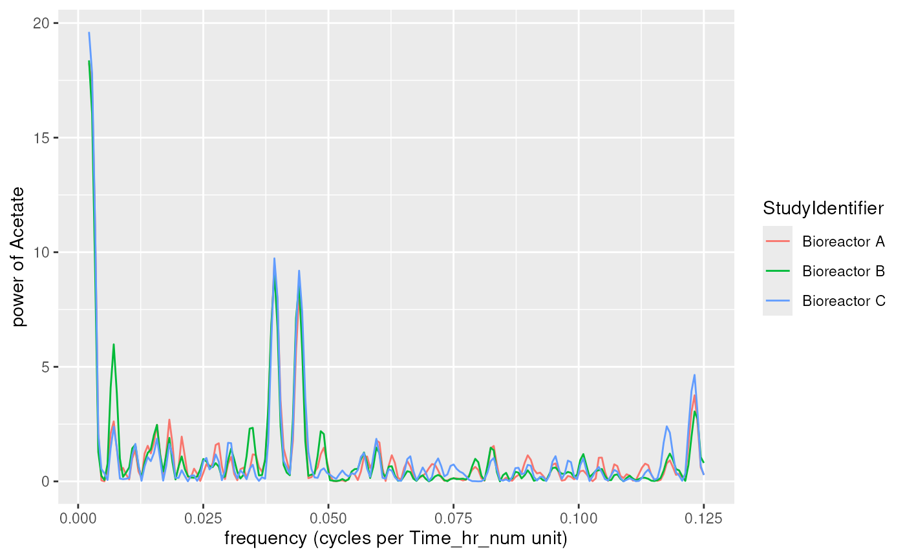
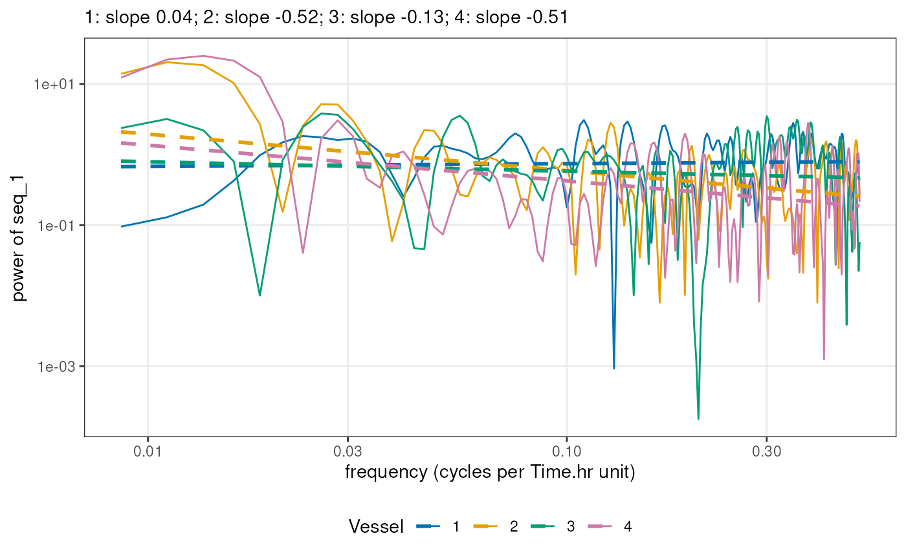

Plot the power spectrum of a series
Source:R/AllGenerics.R, R/plotSpectrum.R, R/zzz-mae.R
plotSpectrum.RdplotSpectrum() draws the Lomb-Scargle periodogram of a variable,
one curve per subject. Peaks show periodic changes, such as daily
rhythms.
Usage
plotSpectrum(x, ...)
# S4 method for class 'SummarizedExperiment'
plotSpectrum(
x,
y,
time.col,
group = NULL,
assay.type = "counts",
fit = c("none", "power"),
...
)
# S4 method for class 'MultiAssayExperiment'
plotSpectrum(x, ..., experiment = 1L)Arguments
- x
a
SummarizedExperimentobject.- ...
additional arguments passed to
geom_line.- y
Character scalar. Specifies the variable: a column ofcolData(x), a row ofassay(x, assay.type), or"<dimred>:<component>".- time.col
Character scalar. Specifies the column fromcolData(x)that contains sampling times: numeric,DateorPOSIXct.- group
Character scalar. Specifies the column fromcolData(x)that identifies subjects. IfNULL, all samples form one series. (Default:NULL)- assay.type
Character scalar. Specifies the assay to retrieveyfrom whenyis a feature name. (Default:"counts")- fit
Character scalar. Draws no fit ("none") or a straight line on log-log axes ("power") for each subject; the subtitle gives its slope. (Default:"none")- experiment
Character scalarorinteger scalar. For aMultiAssayExperiment, the experiment to plot; its samples get thecolDataofx. (Default:1L)
Details
Frequencies are in cycles per time.col unit (per day for
Date, per hour for POSIXct times), from one cycle over
the series to half the median sampling rate. A linear trend is removed
first, and the first and last tenth of the series are tapered with a
cosine bell, as spectrum does by default;
the taper reduces the leakage of power from low to high frequencies.
The power is normalised by the variance of the series. The
periodogram allows uneven sampling; for even sampling it equals the
classical periodogram. Subjects with fewer than four samples are left
out.
The slope of the log-log fit gives the noise colour of the series:
about 0 for white noise, -1 for pink, -2 for brown and below for black
noise (Faust et al. 2018, doi:10.1186/s40168-018-0496-2).
plotNoise classifies the features of each subject by
this slope.
References
Lomb NR (1976). Least-squares frequency analysis of unequally spaced data. Astrophysics and Space Science 39:447-462.
Scargle JD (1982). Studies in astronomical time series analysis. II. The Astrophysical Journal 263:835-853.
Examples
# Acetate in three bioreactors fasted once a day: peaks near 1/24 per
# hour; the lowest frequencies carry the slow rise and fall of acetate
data("minimalgut", package = "miaTime")
plotSpectrum(minimalgut, y = "Acetate", time.col = "Time_hr_num",
group = "StudyIdentifier")

# Hourly samples with reads of four vessels of an artificial gut, hours
# 476 to 592, one sample per hour: the slope of the spectrum of the most
# abundant taxon on log-log axes
data("SilvermanAGutData", package = "miaTime")
tse <- SilvermanAGutData
tse <- tse[, tse$SampleType == "Hourly" &
tse$Normal_Noise_Sample == "Normal" & tse$Time.hr %in% 476:592 &
colSums(SummarizedExperiment::assay(tse)) > 0]
tse <- tse[, !duplicated(paste(tse$Vessel, tse$Time.hr))]
tse <- mia::transformAssay(tse, method = "relabundance")
plotSpectrum(tse, y = mia::getTop(tse, top = 1), time.col = "Time.hr",
group = "Vessel", assay.type = "relabundance", fit = "power")
